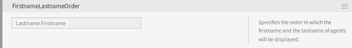

Systemkonfiguration¶
Moderne Systeme haben viele Möglichkeiten, ihr Verhalten zu konfigurieren. Einige verwenden Konfigurationsdateien, die auf der Befehlszeile bearbeitet werden, und andere verwenden eine grafische Oberfläche (und speichern die Informationen in Konfigurationsdateien im Hintergrund), während andere eine Datenbank verwenden. Die Aufrechterhaltung von Änderungen und das Auditing können manchmal ein Problem sein, da nicht immer klar ist, wer eine Änderung vorgenommen hat. Das Durchführen von Massenänderungen ist nicht immer möglich, und das Zurückrollen ändert eine Aufgabe.
OTRS verwendet eine komfortable grafische Oberfläche zur Konfiguration des Systems. Alle Änderungen an der Standard-Systemkonfiguration werden in der Datenbank gespeichert und können überprüft (wer hat wann eine Einstellung geändert, was war der alte und was der neue Wert) und im Falle einer Fehlkonfiguration in einen früheren Zustand zurückgesetzt werden.
Die komfortable Suche ermöglicht ein schnelles und einfaches Auffinden der gewünschten Einstellungen.
Siehe auch
Mit dem Paket System Configuration History <https://otrs.com/otrs-feature/system-configuration-history/>__ können Sie Änderungen, die von Benutzern vorgenommen wurden, problemlos zurücksetzen. Kontaktieren Sie sales@otrs.com, um diese Funktion zu Ihrem System hinzuzufügen.
Verwenden Sie diesen Bereich, um die Systemeinstellungen zu verwalten. OTRS bietet rund 2200 Konfigurationseinstellungen. Die Systemkonfigurationsverwaltung ist im Modul Systemkonfiguration der Gruppe Administration verfügbar.
Systemkonfigurationen verwalten¶
Bemerkung
Aus Sicherheitsgründen können die Konfigurationseinstellungen für die Datenbankverbindung in der grafischen Benutzeroberfläche der Systemkonfiguration nicht geändert werden. Diese müssen manuell in Kernel/Config.pm eingestellt werden.
Um eine Systemkonfiguration zu ändern, müssen Sie mehrere Schritte durchführen. Das folgende Beispiel zeigt Ihnen, wie Sie die Systemkonfiguration FirstnameLastnameOrder finden, ändern, bereitstellen und zurücksetzen können.
Suchen Sie die Systemkonfiguration, indem Sie den Suchbegriff
lastnamein das Suchfeld eingeben.Mit der Volltextsuche können alle Konfigurationseinstellungen nach einem oder mehreren Schlüsselwörtern durchsucht werden. Die Volltextsuche durchsucht nicht nur die Namen der Konfigurationseinstellungen, sondern auch die Beschreibungen und Werte. So kann ein Element leicht gefunden werden, auch wenn sein Name unbekannt ist.

Systemkonfiguration - Suche nach Einstellungen
Wählen Sie die Einstellung aus den Suchergebnissen aus.

Systemkonfiguration - Einstellung gefunden
Klicken Sie links oben in der Kopfzeile des Widget um die Einstellungsmöglichkeiten zu sehen.

Systemkonfiguration - Erweiterte Einstellungen
Fahren Sie mit der Maus über den Widget-Body, um die Schaltfläche Einstellung bearbeiten einzublenden.

Systemkonfiguration - Einstellung bearbeiten
Klicken Sie auf die Schaltfläche Einstellung bearbeiten, um den Bearbeitungsmodus zu aktivieren. Im Bearbeitungsmodus erhält das Widget links einen orangefarbenen Rand.
Bemerkung
Wenn eine Einstellung derzeit von einem anderen Administrator bearbeitet wird, ist es nicht möglich, Zugriff auf den Bearbeitungsmodus für diese Einstellung zu erhalten, bis der andere Administrator seine Arbeit beendet hat.

Systemkonfiguration - Einstellung angeklickt
Ändern Sie den Wert der Einstellung. Die Bearbeitung kann durch Klicken auf die Schaltfläche Abbrechen rechts oder durch Drücken der Taste Escape auf Ihrer Tastatur abgebrochen werden. Wenn die Bearbeitung abgebrochen wird, werden alle während der aktuellen Bearbeitungssitzung vorgenommenen Änderungen verworfen.

Systemkonfiguration - Einstellung geändert
Klicken Sie auf die Schaltfläche Speichern. Wenn die Änderung gespeichert wird, bekommt das Widegt einen grünen Rand an der linken Seite.

Systemkonfiguration - Einstellung gespeichert
Gehen Sie zurück und klicken Sie in der linken Seitenleiste auf die Schaltfläche Inbetriebnahme. Sie werden auch in der Benachrichtigungsleiste darüber informiert, dass Sie noch nicht in Betrieb genommene Einstellungen haben.

Systemkonfiguration - Einstellungsänderungen
Überprüfen Sie die Änderungen.
Sie können auf die Schaltfläche ⇄ in der rechten oberen Ecke klicken, um die Änderungen nebeneinander zu vergleichen.

Systemkonfiguration - Einstellungsunterschiede
- Klicken Sie auf die Schaltfläche Ausgewählte Einstellungen in Betrieb nehmen. Wenn mehrere Einstellungen geändert werden, ist es möglich, nur die ausgewählten Einstellungen zu übernehmen.
- Fügen Sie einen Kommentar hinzu, der anderen Administratoren erklärt, was geändert wird und warum. Verwenden Sie hier ganze Sätze.

Systemkonfiguration - Einstellung in Betrieb nehmen
- Gehen Sie zurück und suchen Sie erneut nach dem Term
lastname, um die geänderte Einstellung zu finden. Das Widget hat einen grauen Rand an der linken Seite, um anzuzeigen, dass diese Einstellung geändert wurde.
Systemkonfiguration - Einstellung in Betrieb genommen
- Um die Einstellung zurückzusetzen, klicken Sie links auf die Kopfzeile des Widgets, um die erweiterten Optionen anzuzeigen. Klicken Sie dann auf die Schaltfläche Einstellung zurücksetzen.

Systemkonfiguration - Einstellung zurücksetzen
- Klicken Sie auf die Schaltfläche Bestätigen.
- Nehmen Sie die Einstellungen in Betrieb.
Verwendung des Navigationsbaums¶
Jede Konfigurationseinstellung wird nach einer Kategorie und einer Navigationsgruppe klassifiziert. Navigationsgruppen sind einzelne Elemente im Hauptnavigationsbaum. Durch Auswahl eines dieser Navigationseinträge werden alle der ausgewählten Gruppe zugeordneten Einstellungen angezeigt. Solange keine Erweiterungen installiert sind, wird die Kategorieauswahl automatisch ausgeblendet, aber sobald ein Paket mit eigenen Konfigurationseinstellungen (z.B. ITSM-Module oder Survey) installiert wird, wird die Kategorieauswahl angezeigt. Wenn Sie eine Kategorie auswählen, zeigt der Hauptnavigationsbaum nur die Navigationsgruppen an, die zu der ausgewählten Kategorie gehören.

Systemkonfiguration-Navigationsbaum
Um ein Element auszuklappen, klicken Sie auf den Pfeil daneben. Die Zahl zwischen den Klammern gibt an, wie viele Einstellungen zu diesem Element gehören. Wenn ein Element keine Nummer hat, ist dieses Element nur eine Oberkategorie. Es hat keine Einstellungen, es hat nur Unterkategorien.
Die Verwendung des Navigationsbaums führt zu den gleichen Ergebnissen wie die Suche nach einer Einstellung. Wenn Sie eine Einstellung sehen möchten, zu welcher Gruppe sie gehört, erweitern Sie diese, indem Sie auf die Überschrift des Widgets klicken.
Systemkonfiguration - Erweiterte Einstellungen
Zum Beispiel kann FirstnameLastnameOrder unter Frontend → Base gefunden werden.
Systemkonfigurationen importieren und exportieren¶
Klicken Sie in der linken Seitenleiste auf die Schaltfläche Import & Export um zur Seite zum Importieren und Exportieren aufzurufen.
Systemkonfiguration - Import und Export
So exportieren Sie Systemkonfigurationen:
- Klicken Sie im Widget Export auf die Schaltfläche Aktuelle Konfiguration exportieren.
- Speichern Sie die Datei
Export_Current_System_Configuration.ymlin Ihrem lokalen Dateisystem. - Benennen Sie die Datei in einen beschreibenderen Namen um.
So importieren Sie Systemkonfigurationen:
- Klicken Sie im Widget Import auf die Schaltfläche Durchsuchen….
- Wählen Sie eine zuvor exportierte
.ymlDatei. - Klicken Sie auf die Schaltfläche Systemkonfiguration importieren.